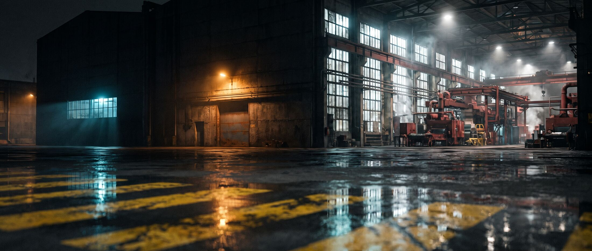
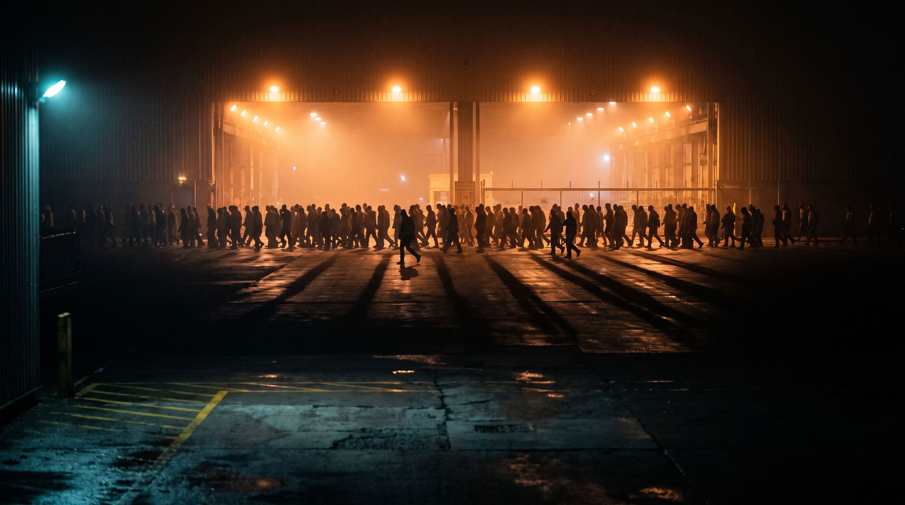
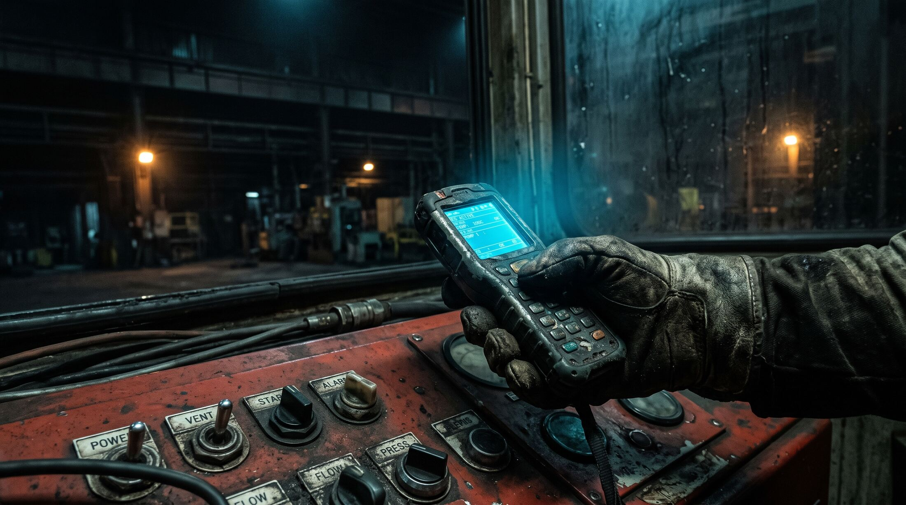

Night
Shiftdarkrun vs Archon
Two projects claim the same job: make agentic coding repeatable instead of improvised. One has 23,030 stars and a plant running every bay. The other has a better machine and an empty yard.
Start with the
number that hurts
They are fifteen months ahead on distribution. You are ahead on architecture. Distribution compounds and architecture does not.
Archon (coleam00/Archon) opened in February 2025 as a Python task-management and RAG tool, then pivoted the whole repo into a TypeScript workflow engine and kept the audience. That is the important part of its history: the stars were earned by a product it no longer is, and they transferred.
darkrun opened at the end of May 2026 and has been building the engine, not the audience. Seventeen crates, roughly 155,000 lines of Rust, 5,850 test cases across 177 files, a desktop app, an iOS build, a web app, a relay tunnel, two factories. Three stars.
Figures read from the GitHub API on 2026-07-29, and from the working tree at commit 1de885f.

A builder and
a line
Both call themselves a harness. They mean different products. Archon sells you the means to build any line you want. darkrun sells you one line with an argument behind the order of its stations.
Nineteen workflows and a YAML DAG
"The first open-source harness builder for AI coding. Make AI coding deterministic and repeatable." You write processes as YAML graphs: ai nodes for judgment, bash nodes for determinism, loop nodes with an until condition and optional fresh_context, approval nodes that pause for a human, depends_on for sequencing.
- 19 bundled workflows, including a five-reviewer PR review and a workflow that builds workflows
- A git worktree per run, so five fixes run at once without collision
- SQLite or Postgres behind it, 14 tables
- Drives Claude Code, Codex, or Pi as the intelligence
- Reachable from a web dashboard, a CLI, Telegram, Slack, Discord, and GitHub webhooks
- MIT, Bun and TypeScript, installed by curl, Homebrew, or Docker
Six stations in cost order
"An agentic assembly line for your business." The line is not something you assemble from nodes. It is Frame, Specify, Shape, Build, Prove, Harden, ordered by the cost of finding the problem late, and every station walks the same six-phase machine whether the work is code or a contract.
- Factory > Station > Unit > Pass, with 64 MCP tools and 19 slash commands
- Gates in four flavors: auto, ask, external, await
- Reviewers are separate agents from the Workers, structurally
- Run state is markdown and JSON under .darkrun/, in your repo
- One Rust binary, git through gitoxide, no C and no git CLI
- Rides seven harnesses and resumes a run across them
- FSL-1.1-ALv2, becoming Apache 2.0 on schedule
Who owns
the loop
This is the real difference, and it is not on either project's feature list. Archon is a program that calls agents. darkrun is a program that agents call. Everything else follows from that.
What each choice buys
Archon's orchestrator can guarantee the shape of the run, because it executes the shape. You can read the YAML and know what will happen. The cost is a second stack that has to be running: a Bun process, a database, usually Docker, and a workflow author who had to know the shape of the work before the work started.
darkrun computes the next step per tick from what is on disk, so the line can decompose into however many units the work turns out to need, route a reviewer finding back as feedback, and re-orient when inputs drift. The cost is that the engine constrains the agent rather than executing it. The gate is hard. The step inside the gate is an instruction.
The consequence nobody advertises: because darkrun does not own the session, a run that starts in Claude Code resumes in Cursor or Codex without conversion. Archon owns the session by design, so its runs live where its orchestrator lives.
Determinism,
twice defined
Archon makes the path repeatable. darkrun makes the bar repeatable.
A repeatable path is worth a great deal when the job recurs: fix this class of issue, review this kind of PR, take an idea to a pull request. Nineteen bundled workflows is nineteen jobs someone already shaped for you, and that is a real gift on day one.
A repeatable bar is what you want when the job is novel. darkrun does not claim to know the steps. It claims the artifact will have been challenged by something other than its author, reviewed by an agent that did not write it, and stopped at a gate where a human said continue. That claim holds on work no one wrote a workflow for.
Archon can express darkrun's bar as a workflow. It cannot make the bar unavoidable, because the whole product premise is that you author the graph. Opt-in quality is quality that gets skipped under deadline.
darkrun can express Archon's paths as factories, and does, but it ships two of them against nineteen. That gap is real and it is the sort of gap a community fills, which is exactly the resource darkrun does not have yet.
Thirteen axes,
called honestly
Each row names a lead. The lead is stated in words as well as color, because a color alone is not an answer.
| Axis | Archon | darkrun | Lead |
|---|---|---|---|
| Public traction | 23,030 stars, 3,447 forks, 56 contributors, 1,684 commits | 3 stars, 0 forks, 1 contributor | Archon |
| License friction | MIT. Nothing to read, nothing to approve | FSL-1.1-ALv2, Apache 2.0 on schedule. Legal has to read it | Archon |
| Category language | Owns the phrase "harness builder" and the n8n-for-development frame | Factory, Station, Unit, Pass. Distinctive, and a vocabulary to learn | Archon |
| Time to first value | 30 second install, 19 workflows ready to run | Setup, then concepts, then a run. zap exists but is not the front door | Archon |
| Process authoring | YAML DAG, a workflow that builds workflows, a community writing more | Scaffoldable markdown factories. Two shipped: software and legal | Archon |
| Development pace | 56 contributors, commits today, 37 open pull requests | One person, high output, no bus factor | Archon |
| Runtime footprint | Bun process, SQLite or Postgres, usually Docker, a server to keep up | One static Rust binary the agent launches. gitoxide, no C, no git CLI | darkrun |
| Where the loop lives | Orchestrator drives the agent as a subprocess | Engine answers the agent inside its own session | darkrun |
| Run state | 14 tables in a sidecar database, invisible to code review | Markdown and JSON in the repo, diffable, reviewable in a pull request | darkrun |
| Quality enforcement | Per workflow, opt in. Excellent when authored, skippable by design | Structural. Challenge every pass, Reviewer never the Worker | darkrun |
| Harness portability | Owns the assistant: Claude Code, Codex, Pi | Seven harnesses, adapts its tools per harness, resumes across them | darkrun |
| Domain range | AI coding, by design | Engine is domain agnostic. Software and legal factories today | darkrun |
| Human in the loop | Reach: Telegram, Slack, Discord, GitHub webhooks, no install | Depth: desktop app, iOS, web, relay tunnel, annotations and pickers | Even, split |
| Parallelism | A worktree per run, five fixes at once | Units fan out per station, worktree isolation per agent | Even |
Fourteen rows, thirteen distinct axes: parallelism and human-in-the-loop are both scored even for different reasons. A tie on count is not a tie in the market. Commercial leads compound on their own; architectural leads only pay once someone shows up to use them.
Six things they
cannot copy cheaply
The run is a git artifact
Every decision, unit, review finding, and gate lives in markdown inside the repository, so process history travels with the code, shows up in a pull request, and can be read a year later by someone who was not there. Archon's equivalent is in a database next to the repo. This is the sharpest true claim darkrun has and it is barely used in the pitch.
One binary, no second stack
No Bun, no Node, no SQLite or Postgres, no Docker, no server to keep running. The agent launches a static Rust binary that speaks MCP and exits. For a team that will not stand up infrastructure to try a dev tool, this is the difference between an evaluation and no evaluation.
Generator and evaluator are separated by construction
Make, Challenge, Resolve inside every pass, and Reviewers that are different agents from the Workers. A model does not grade its own first draft. Archon can write this as a workflow, and their five-reviewer PR review is close, but per workflow means optional, and optional means skipped when it matters most.
It rides your harness instead of replacing it
Seven harnesses, tools trimmed to each one's limits, and a run that resumes in a different tool than it started in because the state is on disk and the manager is a pure read of it. Archon has to own the assistant to run its graph.
Review has depth, not just a notification
Diff review, annotations, directions, pickers, and questions rendered from the real API types on desktop, on iOS, and over a relay tunnel. Approving is not a thumbs up on a chat message, it is a review surface. Their reach is better. Your review is better.
The engine is not about code
The factory is a methodology container and the software factory is one instance. A legal factory already ships. Archon is AI coding by design, which is a sharper wedge today and a smaller ceiling later.

Six things
worth respecting
Distribution, which is the only one that matters today
23,030 stars, 3,447 forks, 56 contributors, 193 open issues from people actually using it. They also proved they can carry an audience through a full rewrite: v1 was a Python task-management and RAG tool, and the stars followed the pivot.
MIT
No license conversation, no procurement question, no hesitation. FSL is a defensible commercial choice and it will still lose evaluations that never reach you, silently, with no feedback.
They named the category
"The first open-source harness builder for AI coding" is a good line and it is theirs. Anyone searching the concept lands on their framing, and darkrun then has to be explained in terms of it.
Zero install human loops
Telegram, Slack, Discord, and GitHub webhooks put approvals where people already are. A native app is a better review surface and a worse place to be found at 9pm on a phone that has never installed it.
Nineteen workflows is nineteen answers
Fix an issue, review a PR, take an idea to a PR, resolve conflicts, refactor safely, run an interactive PRD. New users get value before they get concepts. That ordering is worth copying.
A community that writes the product for them
A workflow that builds workflows plus 56 contributors means their surface grows without their founder. One person shipping 155,000 lines of Rust is impressive and it is still one person.
What to watch
for, exactly
They absorb the quality machinery
Nothing stops a YAML author from adding a challenge node and a distinct evaluator node. The idea is not defensible, only the enforcement is, and enforcement is a weaker story to tell than a feature.
Trigger a bundled workflow that separates generator from evaluator by defaultThey ship an MCP mode
If Archon becomes agent-callable, darkrun's "no second process" edge shrinks to the runtime footprint alone, and the footprint argument is much weaker on its own.
Trigger an archon mcp command, or an MCP server in their docsThe vocabulary tax
Station, Unit, Pass, Baton, Drift is precise and it is also six new words before the first win. Workflow, node, step costs nothing to learn.
Trigger a user describing darkrun in their own words and getting the model wrongThe license quietly loses the evaluation
This is a decided question and the cost is still real: FSL rejections happen offscreen, so you never learn which teams walked.
Trigger any inbound that asks whether the core will ever be Apache before it isSolo bandwidth against 56 contributors
Their surface grows while they sleep. Yours grows when you work. Pick the axes where one person with a compiler beats a crowd, and refuse the rest.
Trigger their release cadence overtaking yours on a feature you consider yours
Six moves,
in dependency order
Lead with the git artifact claim
"Your process history ships with your repo and is reviewable in a pull request." Nobody else can say it. Put it above the factory metaphor on every surface, because it needs no vocabulary to understand.
Make zap the front door
First value before first concept. One command, one unit, a real result, nothing written under .darkrun/ unless they want it. Stations, Units, and Passes are the second conversation, not the first.
Claim the bar, not the builder
Do not compete for "harness builder", they have it. Compete for the guarantee: challenged by someone other than the author, reviewed by an agent that did not write it, stopped where a human decided. Say it as a promise about outcomes.
Import their YAML as a factory
One command that turns an Archon workflow into a darkrun factory turns 23,000 people from a wall into a funnel, and it costs one converter plus a mapping doc.
Buy their reach cheaply
A GitHub App that posts the gate and a Slack approval that resolves it. The native apps stay the deep surface. Reach is where their humans already are, and it is a bounded amount of work to be there too.
Publish this comparison yourself
Challengers who name the incumbent fairly get quoted. A table you wrote, with their wins listed accurately, is more persuasive than one they write about you, and it forces the architectural axes into the conversation.
Do not chase nineteen workflows. A menu is not a moat, and matching their library is a race against 56 contributors on the one axis where headcount decides. Ship the two factories deep enough that the third is obviously scaffoldable, and let the interop path do the rest.
Do not rebuild an orchestrator. Being the thing the agent calls, rather than the thing that calls the agent, is the whole differentiated bet. Any roadmap item that requires a long running server should be treated as a request to become a worse Archon.